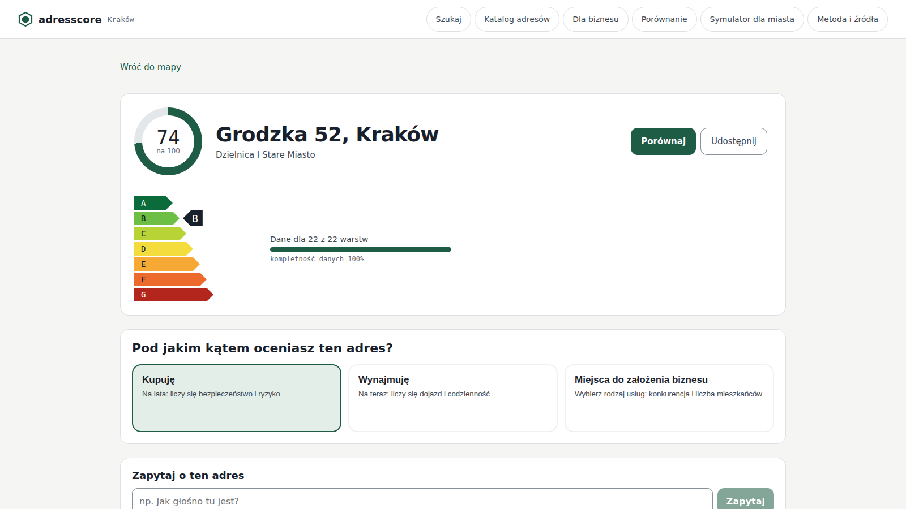
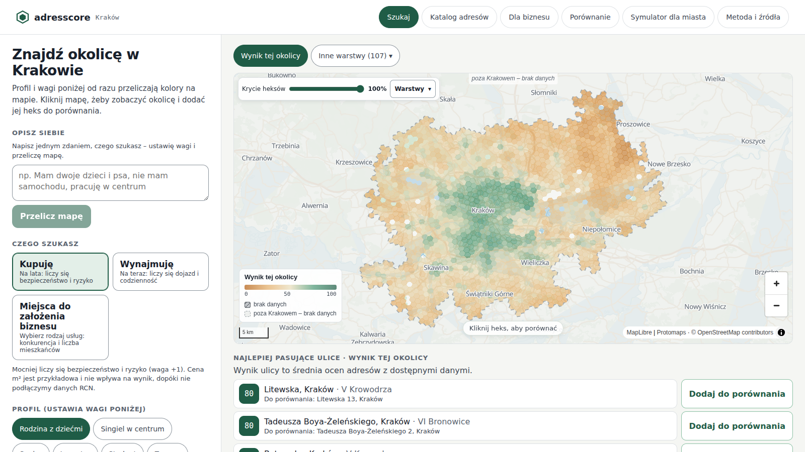
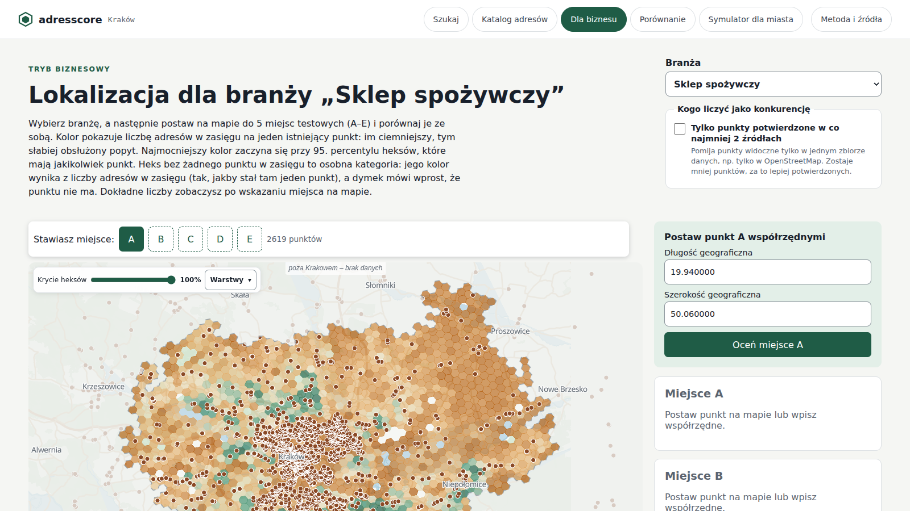

HackYeah 2026 · Smart City
Jakość życia pod każdym adresem – jedna etykieta A–G z rejestrów publicznych.
adresscore.pl [adres demo do potwierdzenia]
Zespół: [NAZWA ZESPOŁU] · [imiona i nazwiska, 1–6 osób]
Problem
Hałas i adresy w MSIP, powietrze w GIOŚ, budynki w GUGiK, budowy w GUNB, rozkłady w GTFS. Każdy osobno, w innym formacie.
Jedne dane dotyczą adresu, inne heksu albo siatki 1 km, jeszcze inne całej gminy. Nikt nie mówi, które są które.
O hałasie, braku przedszkola i bloku, który wyrośnie za oknem, dowiadujemy się za późno.
Ogłoszenia mówią o metrażu i cenie. Miasto ma dane o tym, jak się żyje pod adresem, ale nie w formie, z której skorzysta mieszkaniec.
Rozwiązanie

Demo
Rodzina z dziećmi, Singiel w centrum, Senior, Student, Inwestor, Z psem albo „opisz siebie”.
35 274 heksy z adresami przeliczają kolory od razu po zmianie wag.
Etykieta, kategorie, źródło przy każdej liczbie. Okolica to jedna ze 123 jednostek SIM Krakowa, nie cała dzielnica.
Radar i tabela, link do udostępnienia.

Warstwa AI – JEV
„Mam dwoje dzieci i psa, nie mam samochodu” → wagi kategorii i warstw. Mapa przelicza się od razu.
„Jak głośno tu jest?” → JEV wskazuje warstwę z listy, a liczbę i źródło podaje aplikacja z danych.
Klucz tylko po stronie serwera (funkcja api/jev). Gdy AI nie odpowie w czasie, działa reguła zapasowa.
Model nie generuje ani liczb, ani miejsc. Każde niepowodzenie (brak klucza, przekroczony czas, odmowa) kończy się regułą zapasową, nigdy błędem. Dzięki temu AI nie zmyśli jakości powietrza pod Twoim adresem.
Dane
punkty adresowe – Kraków + 13 gmin
warstw (wskaźników) w danych aplikacji
z nich liczonych dla konkretnego adresu
gmin w zasięgu pilotażu
adres 87siatka 12heks 5rejon 5gmina 16powiat 1
MSIP Kraków, GUGiK, GIOŚ, GUS, GUNB, NFZ, KG PSP, ZTP (GTFS), PKW, SEWIK, OSM i inne – pełna lista z licencjami na ekranie „Metoda i źródła”.
Licencja MSIP zakazuje ciągłego pośredniczenia w usługach miasta, więc dane liczymy skryptami (Node + DuckDB) do plików statycznych z datą pobrania.
Brak danych to szara kategoria, nigdy zero, więc nie obniża wyniku.
Tryby Biznes i Miasto

Etyka
Przestępczość tylko w rozdzielczości rejonu, z której pochodzi – nigdy przypisana do konkretnego domu.
Rozdzielczość i źródło przy każdej liczbie, pasek kompletności, szare zamiast zera. Dane przykładowe są oznaczone i nie wpływają na wynik.
Nie ma jednej „złej dzielnicy”, bo wagi ustawia użytkownik. Niska ocena ma „co by to zmieniło” zamiast wyroku.
Luki miasta pokazujemy, żeby wiedzieć, gdzie postawić przedszkole albo przystanek. Nie po to, żeby wskazać, gdzie nie mieszkać.
Roadmapa
Pilotaż na pełnych danych MSIP i rejestrach krajowych.
Warszawa, Wrocław, Poznań, Gdańsk. Warstwy krajowe (GUGiK, GUS, GIOŚ, GTFS, PKW) działają od razu, miejskie portale dokładamy po kolei.
Punkty adresowe PRG i warstwy krajowe dla każdego adresu; reszta jako szare „brak danych”.
Raport dla samorządu: gdzie inwestycja poprawi zasięg usług najbardziej.
Architektura już to zakłada: skrypty ETL → pliki statyczne → hosting bez serwera bazy danych dla mapy.
Sprawdź sam
Gotowe
Ujawnienie
Szablon repozytorium (konfiguracja Vite, React, Biome, Supabase, kolejka zadań) powstał przed startem hackathonu o 11:00 [commit/data – do potwierdzenia]. Funkcje i dane powstały w trakcie wydarzenia.
Repo: [link albo dostęp dla jury]